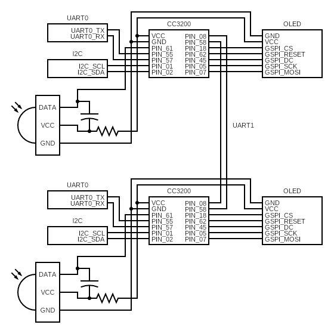

A multiplayer game using CC3200 microcontrollers, OLED displays, and AWS integration.
Project Description
This project is a multiplayer game inspired by the mobile game DUAL. It utilizes two CC3200 microcontrollers, each connected to an OLED display, allowing two players to battle in real-time. The game uses UART for inter-device communication, an accelerometer for motion-based controls, and AWS IoT for tracking scores.
Video Demonstration
System Architecture
CC3200 Microcontrollers: Handle real-time game logic and AWS communication.
OLED Display: Renders game visuals and player information.
UART Communication: Synchronizes game state between two microcontrollers.
Accelerometer: Provides tilt-based movement controls.
Infrared (IR) Input: Used for entering player usernames.
AWS IoT: Manages game score updates and cloud integration.
Game States
Setup: Players enter their usernames using an IR remote. Once both are ready, the game starts.
Game Logic: Each player controls a ship using the accelerometer, and projectiles are fired using a button. Data is exchanged via UART to ensure seamless gameplay.
Score Update: Scores are stored locally and updated on AWS after each round.
Game End: A winning screen is displayed based on game results. Players can restart with the same names or enter new usernames.
How to Run
Flash the CC3200 microcontrollers with the provided firmware.
Connect both boards and all components according to the following schematic:

Run the provided Flask server and host the site using an ngrok tunnel.
Ensure AWS IoT is correctly set up for cloud-based score updates.
Connect AWS IoT to AWS Lambda and configure it with the following function:
import sys
import json
import requests
sys.path.append('/opt/python')
def lambda_handler(event, context):
if "message" not in event:
return {
"statusCode": 400,
"body": json.dumps("Error: No 'message' key found in event.")
}
msg = event["message"]
payload = {"iotMessage": msg}
flask_url = "(insert ngrok url here)"
try:
response = requests.post(flask_url, json=payload)
return {
"statusCode": response.status_code,
"body": response.text
}
except Exception as e:
return {
"statusCode": 500,
"body": json.dumps("Internal Server Error")
}
Open the Python terminal intialized from server.py for the score display.
Connect both boards to power and start their programs.
How to Play
Use an IR Remote to enter usernames on both boards prior to the game.
Tilt the board to move the ship around the screen.
Click or hold the SW3 button on the board to shoot projectiles. Holding the button shoots bigger projectiles.
An ammo count is displayed on the sides of the ship. Running out of ammo limits new projectiles from being shot or charging projectiles to get any bigger. Wait for a cooldown for ammo to recharge.
Target your projectiles at your opponent's ship. The round is over when someone is hit.
Play rounds until someone reaches the winning score of 5.
At the end screen, select either the restart or home button on both boards using the right/left buttons on the remote. Press OK to confirm.